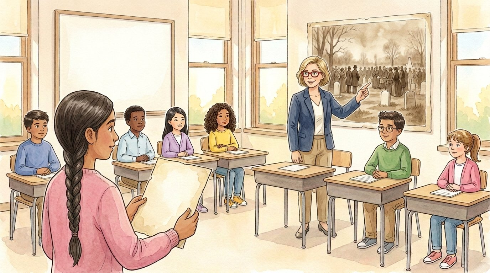

Grade 8 · Social studies · SS.6-8.CV.4.LC
Four score and seven years
A story about a two-minute speech, a number hidden in its first words, and a promise from 1776 that a nation at war was trying to keep.
Cuatro veintenas y siete años. Un cuento sobre un discurso de dos minutos, un número escondido en sus primeras palabras y una promesa de 1776 que una nación en guerra intentaba cumplir.
Social studies words you will learn
Tap a green word to see what it means.
Toca una palabra verde para ver qué significa. Con la ayuda activada, verás también la definición en español.
The story
El cuento está en inglés. Pulsa «Listen to the story» para escucharlo y toca las palabras verdes cuando no entiendas una.
Ms. Novak wrote four words on the board: Four score and seven. "These are the first words of one of the most famous speeches in American history," she said. "President Lincoln gave it on November 19, 1863, at Gettysburg, Pennsylvania. But first, a math problem."
"A is an old word for twenty," she said. "So how many years is four score and seven?" Israel was quickest. "Four times twenty is eighty, plus seven is eighty-seven." "And 1863 minus 87?" asked Ms. Novak. "1776!" said Salma. "The year of the Declaration of Independence!"
"Exactly," said Ms. Novak. "Lincoln began by going back 87 years, to the . He said that the nation had been conceived in liberty and dedicated to the proposition that all men are created equal." "Proposition, like in Euclid," whispered Israel.
"Why was he at Gettysburg?" asked Daniel. "In July 1863, one of the biggest battles of the Civil War was fought there," said Ms. Novak. "Thousands of soldiers died. In November, a cemetery for the Union soldiers was going to be , and Lincoln was invited to say a few words."
"Another speaker, Edward Everett, spoke for about two hours," said Ms. Novak. "Then Lincoln stood up and spoke for about two minutes. His had only about 270 words." "Two hours versus two minutes," said Elías. "And people remember the short one."
"Lincoln said that the war was testing whether a nation built on liberty and could last," said Ms. Novak. "And he ended with a promise: that government of the people, by the people, for the people, shall not perish from the earth." "That's ," said Athena. "A government by the people."
"Five copies of the speech in Lincoln's handwriting still exist," said Ms. Novak. "The Library of Congress keeps two of them, which Lincoln gave to his secretaries, John Nicolay and John Hay. Historians still debate which copy he held in his hand that day." She passed around a printed copy of the first page.
Selena read the last line out loud, slowly. Then the class was quiet. Sophia wrote in her notebook: 87 years connected two moments. A promise from 1776 had to be kept again in 1863.
Pause to connect
Visual arts · VA:Cn11.1.8
Look at the Library of Congress exhibition items for the Gettysburg Address.
Observa los objetos de la exposición de la Biblioteca del Congreso sobre el discurso de Gettysburg.
Gettysburg Address: exhibition items (Library of Congress) (opens in a new tab)
What you will see: Old handwritten pages of the speech, one page written in ink on Executive Mansion paper and another in pencil on lined paper, and an 1863 photograph of Lincoln sitting between his two secretaries.
Lo que verás: Antiguas páginas manuscritas del discurso, una escrita con tinta en papel de la Mansión Ejecutiva y otra a lápiz en papel con renglones, y una fotografía de 1863 de Lincoln sentado entre sus dos secretarios.
- Look at Lincoln's handwriting. Can you find words he crossed out or changed? What does that tell you about how he wrote the speech?Observa la letra de Lincoln. ¿Encuentras palabras tachadas o cambiadas? ¿Qué te dice eso sobre cómo escribió el discurso?
- One page is in ink and another in pencil. Why might a historian care about details like the paper and the ink?Una página está escrita con tinta y otra a lápiz. ¿Por qué le importarían a un historiador detalles como el papel y la tinta?
Think about it, then answer in your notebook or talk it over with someone at home.
Check your thinking
Changes and crossed-out words show that Lincoln revised his speech carefully; it wasn't written in one quick try. Details like the paper, the ink and the pencil help historians figure out where and when each page was written, and which copy might have been the one he read from at Gettysburg.
Glossary
- score
- An old word for twenty. Four score is eighty.
- veintena (score): Una palabra antigua que significa veinte. Four score son ochenta.
- address
- A formal speech to an audience.
- discurso (address): Un discurso formal ante un público.
- Declaration of Independence
- The 1776 document in which the colonies declared their independence and stated that all men are created equal.
- Declaración de Independencia: El documento de 1776 en el que las colonias declararon su independencia y afirmaron que todos los hombres son creados iguales.
- equality
- The idea that all people have the same basic rights and worth.
- igualdad: La idea de que todas las personas tienen los mismos derechos básicos y el mismo valor.
- dedicate
- To set aside a place for a special purpose, often with a ceremony.
- dedicar (consagrar): Destinar un lugar a un propósito especial, a menudo con una ceremonia.
- democracy
- A government by the people, in which citizens choose their leaders.
- democracia: Un gobierno del pueblo, en el que los ciudadanos eligen a sus líderes.
Questions
Choose the correct answer. If you make a mistake, the story shows you where the answer is.
Elige la respuesta correcta. Si te equivocas, el cuento te muestra dónde está la respuesta.
-
Question A. How many years is four score and seven?
¿Cuántos años son four score and seven?
A score is twenty, so four score is eighty, plus seven is eighty-seven.
-
Question B. Why did Lincoln go back 87 years?
¿Por qué Lincoln retrocedió 87 años?
1863 minus 87 is 1776, the year of the Declaration of Independence.
-
Question C. How long did Lincoln speak?
¿Cuánto tiempo habló Lincoln?
Edward Everett spoke for about two hours; Lincoln spoke for about two minutes.
-
Question D. What promise did Lincoln make at the end of the speech?
¿Qué promesa hizo Lincoln al final del discurso?
He ended with the promise that government of the people, by the people, for the people, shall not perish from the earth.
-
Question E. Where are two of Lincoln's handwritten copies kept?
¿Dónde se guardan dos de las copias manuscritas de Lincoln?
The Library of Congress keeps the two copies Lincoln gave to his secretaries, John Nicolay and John Hay.
Challenge: explain your thinking
Connect founding documents and principles
Lincoln connected the Gettysburg Address to the Declaration of Independence. Name one democratic principle from each document and explain how Lincoln used the older document to give meaning to the war.
Conecta los documentos fundacionales con los principios. Lincoln conectó el discurso de Gettysburg con la Declaración de Independencia. Nombra un principio democrático de cada documento y explica cómo usó Lincoln el documento más antiguo para darle sentido a la guerra.
Answer in your notebook or talk it over with a classmate. Use evidence from the story.
Responde en tu cuaderno o coméntalo con un compañero. Usa evidencia del cuento.
Check your thinking
From the Declaration: equality, the idea that all men are created equal. From the Gettysburg Address: government of the people, by the people, for the people. Lincoln said the nation had been founded on the promise of equality, and that the war was a test of whether such a nation could survive. By going back 87 years, he presented the war as a fight to keep the promise of 1776.
Go further
Find the full text of the Gettysburg Address. Count the sentences. Which sentence do you think is the most important, and why?
Para ir más lejos. Busca el texto completo del discurso de Gettysburg. Cuenta las oraciones. ¿Qué oración crees que es la más importante y por qué?
Check your thinking
The address has only ten sentences. Many readers choose the last one, which ends with government of the people, by the people, for the people, because it states the purpose of the struggle. Others choose the first one, because it connects the nation to the equality promised in 1776. Any choice is good if you explain it with the text.